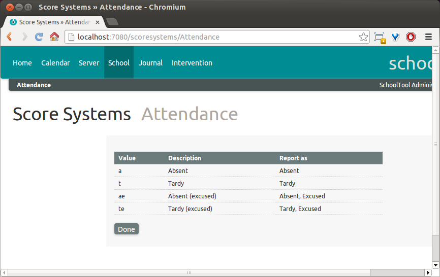

Using the Attendance Journal¶
The Journal provides a method of tracking classroom attendance as well as other data attached to specific class meetings, such as class participation grades.
Finding the Journal¶
While logged in as a teacher, there are two ways to access your Journal. You can follow the Journal link in the top bar. On your calendar view, you can follow the “Journal” link on each section meeting event.
At left you will see two or three choices under View: Attendance, Scores and, if this section meets in a defined homeroom period (at least once per cycle), Homeroom. Changing this selection switches the type of data shown and entered in the Journal.
The Attendance and Homeroom views are for attendance data, Scores is for assigning a score to students for that meeting of the section, for example to record a participation grade.
Setting Up Attendance Codes and Journal Score System¶
Attendance codes are handled as a special type of score system in SchoolTool. As a member of Site Managers, navigate to School and then Customize: Score Systems:
If you click on the Attendance Score System, you can see the details of the default:

You cannot edit or delete score systems (changing them after teachers had assigned scores would cause chaos), so if you want a different set of attendance codes, click Add: Attendance System:
At the top of the form, give your score system a title. Add rows to the table in the lower half of the form to define the attendance system.
Value - is what the teacher will enter in the Journal, use lowercase so the teacher will not have to use the shift key.
Description - this may be very simple, “Absent, Unexcused,” or it may be used to differentiate describe different sub-types, like “Absent - Medical” or “Absent - School Activity.”
Report as - these are the three basic attendance statuses, Present, Absent and Tardy (that is, arrived late).
Excused - select whether this code is considered a properly excused absence or tardy instance.
Click Add to create an additional code. Click Save when you are finished.
Now click Customize: Journal Score Systems:
This form sets the Score System used in the Score mode of Journals across the school. By default, this is set to the “10 Points” system. You can select a different system, either another default one or a custom one, in this form.
You can also select the Attendance Score System used in the Attendance and Homeroom mode of Journals across the school.